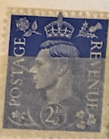
| SOURCE | TITLE| IMAGE MATCH | click to source page |
| eBay | Great Britain Revenue Stamp 2 1/2 d 1941-42 King George VI SG489Wi Used Fine | eBay | 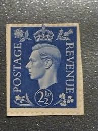 |
| HipStamp | Great Britain #239 2 1/2p King George VI | Great Britain, General Issue Stamp / HipStamp | 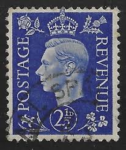 |
| eBay | Great Britain postage stamp - 1937 - Dark Blue | eBay | 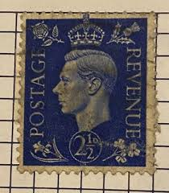 |
| eBay | CANADA Postage ~ King George VI ~ Blue 2½₵ Stamp ~ Posted ~ c.1930's ~ N74 | eBay | 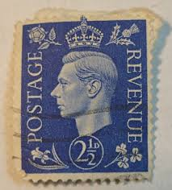 |
| eBay | Blue Decimal British Stamps for sale | eBay | 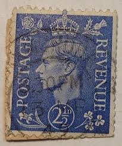 |
| eBay | Royalty Blue George V (1910-1936) Used Canadian Stamps for sale | eBay | 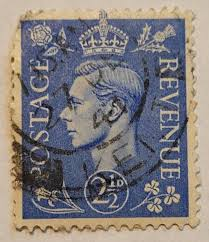 |
| eBay | Blue George VI (1936-1952) Used Canadian Stamps for sale | eBay | 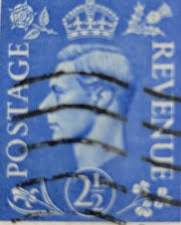 |
| eBay | Machine Cancel British George VI Stamps for sale | eBay | 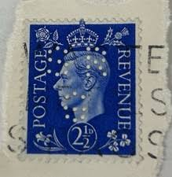 |
| eBay | 2.5p Denomination British Stamps for sale | eBay | 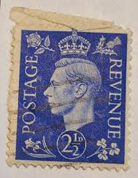 |
| eBay | Used 1/- Denomination British George VI Stamps for sale | eBay | 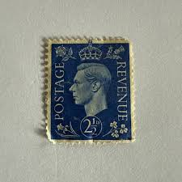 |
| eBay | BRITISH OCCUPIED Middle East Forces King George VI 2½d M.E.F Overprint Used | eBay | 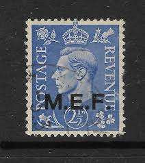 |
| HipStamp | Great Britain #239 2 1/2P King George 6, used VF | Great Britain, General Issue Stamp / HipStamp |  |
| HipStamp | Great Britain #262 2 1/2P King George 6, used F-VF | Great Britain, General Issue Stamp / HipStamp | 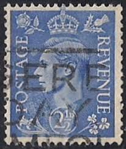 |
| eBay | Las mejores ofertas en Estampillas británicas de Jorge VI Azul | eBay | 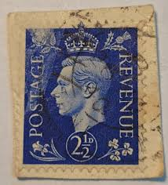 |
| HipStamp | GB George VI SG 466 Used | Great Britain, General Issue Stamp / HipStamp | 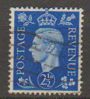 |
| eBay | D Used United States Stamps for sale | eBay |  |
| eBay UK | Good (G) Pre-Decimal Used Great Britain George VI Stamps for sale | eBay UK | 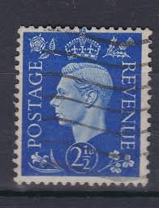 |
| eBay | Blue stamp 2 1/2 Penny King George VI | eBay |  |
| HipStamp | Great Britain #239 King George VI; Used | Great Britain, General Issue Stamp / HipStamp | 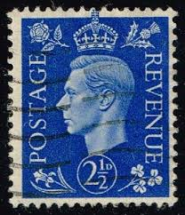 |
| HipStamp | Greatr Britain SC# 239a SG# 466a 2-1/2d WMK Sideways George VI MNH | Great Britain, General Issue Stamp / HipStamp | 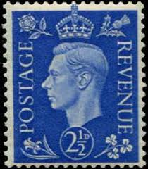 |
| eBay | 3 Denomination British George VI Stamps for sale | eBay | 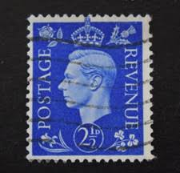 |
| eBay | Las mejores ofertas en Estampillas británicas de Jorge VI de derechos de autor | eBay | 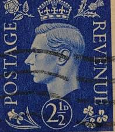 |
| eBay | Royalty 2.5p Denomination British Stamps for sale | eBay | 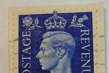 |
| eBay | Royalty 2p British George VI Stamps for sale | eBay | 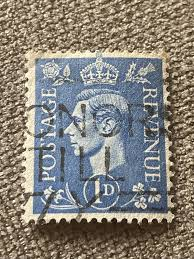 |
| Empirephilatelists.com | Middle East Forces 1942 2 1/2d Ultramarine SGM8 V.F LMM Stamp|Empirephilatelists.com | 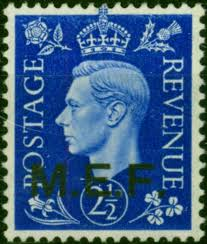 |
| HipStamp | Great Britain #239 2 1/2P King George 6, used VF | Great Britain, General Issue Stamp / HipStamp |  |
| allnumis.com | 2 1/2 Penny - King George VI, 1940 - Great Britain - Stamp - 39048 | 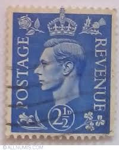 |
| PicClick UK | RARE BLUE STAMP 2 1/2 Penny King George VI £78.70 - PicClick UK | 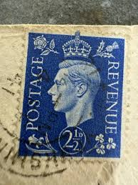 |
| Alexander Historical Auctions | Lot - (GERMAN POSTAL HISTORY) FORGED "BRITISH" PROPAGANDA STAMP | 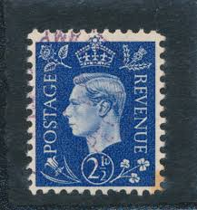 |
| Stanley Gibbons Baldwin's | Past auction: The Tony Mundy Collection of Great Britain | S24017 | 31 October 2024 | 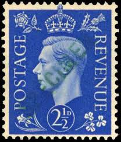 |
| HipStamp | Great Britain King George VI blue 2.5d (AP136726) | Great Britain, Stamp / HipStamp | 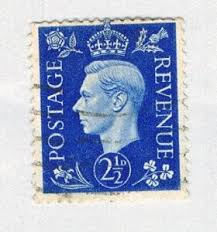 |
| GermanStamps.net | King George VI Forgeries | GermanStamps.net | 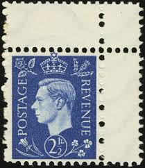 |
| Grosvenor Philatelic Auctions | Historic Sales Summary - Grosvenor Philatelic Auctions : Grosvenor Philatelic Auctions | 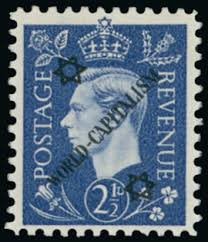 |
| Shutterstock | 10+ Hundred Mark Vi Royalty-Free Images, Stock Photos & Pictures | Shutterstock | 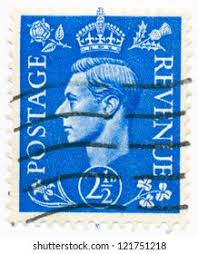 |
| Dreamstime.com | Used English Postage Stamp from the King George VI Series Editorial Photo - Image of letter, historic: 217772541 | 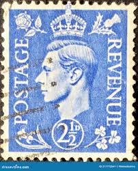 |
| PicClick | LOT OF 20 King George Vi 2 1/2 D Postage Stamps Great Britain - U Ww 2 Era $15.99 - PicClick | 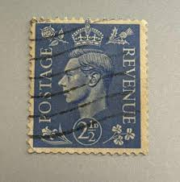 |
| Poshmark | United Kingdom | Office | King George Vi Postage 2 2 D Blue 12 D Green Great Britain Royalty Stamps 2 | Poshmark | 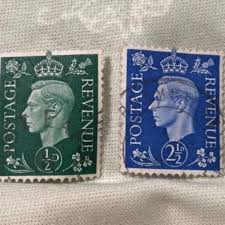 |
| Mark Brandon Stamps | 1941 ½d Pale Green Imperforate Error - Brandon Galleries | 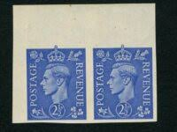 |
| PicClick UK | BRITISH STAMP KING of old George VI 10 shilling dark blue SG478 gb.... £2.99 - PicClick UK | 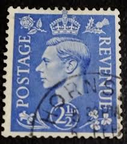 |
| Etsy | GB King George VI 2 1/2d Stamp; Collectible, 1941, Light Cancel - Etsy Singapore | 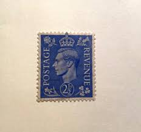 |
| ebid.net | Tangier.1937 Coronation stamp.Mounted Mint.Mar19 on eBid United States | 179035247 | 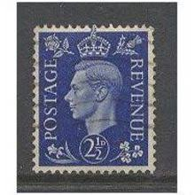 |
| eBay | Postage Revenue ~ King George VI ~ Blue 2½D Stamp ~ Posted/Used ~ c.1940's ~ 04 | eBay | 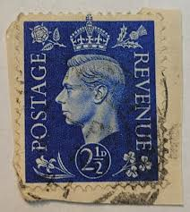 |
| eBay | Las mejores ofertas en Estampillas británicas de Jorge VI Azul | eBay | 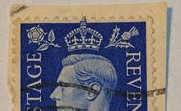 |
| Chamidu Nimesh (chamidunimesh) - Profile | Pinterest | 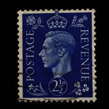 | |
| eBay | Original Gum British George VI Stamps for sale | eBay | 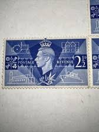 |
| eBay | GB KGVI 1937 2½d. DARK BLUE WMK SIDEWAYS GOOD USED (ID:291/D42575) | eBay | 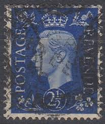 |
| eBay | Great Britain 1937-2 1/2D Blue Revenue/Postage-Used Single | eBay | 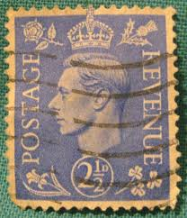 |
| Shutterstock | United Kingdom Circa 1937 Postage Stamp Stock Photo 227447941 | Shutterstock | 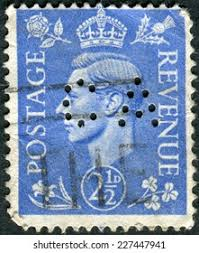 |
| elitecoastauto.com | ST-339} Stamp~ 1937 Great Britain, 2 1/2D - King George VI, Crown (# | 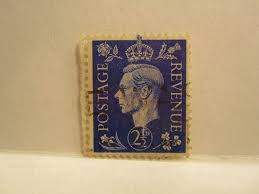 |
| Alamy | Postage stamp 2 hi-res stock photography and images - Alamy | 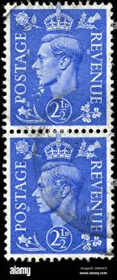 |
| eBay | Great Britain SG#466-PERFIN-SLO- KILBURN 19/NOV/1941 SUN LIFE ASSURANCE SOCIETY | eBay | 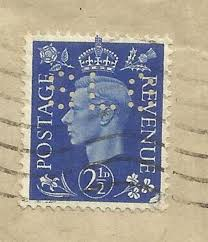 |
| Shutterstock | 33 1d Stamp Royalty-Free Images, Stock Photos & Pictures | Shutterstock | 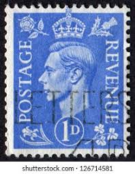 |
| YouTube | Stamps collection # Great Britain 🇬🇧 # King George 6 # blue, red,brown, green - YouTube | 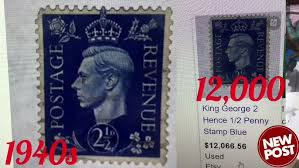 |
| eBay | Victory MINT Peace 1946 OMNIBUS sets mounted mint - multiple listing | eBay | |
| eBay | Great Britain 239 Used - King George VI - Watermark Inverted SG 466wi | eBay |  |
| PicClick UK | GREAT BRITAIN REVENUE Stamp 2 1/2 d 1941-42 King George VI UK Postage Used £1.17 - PicClick UK | |
| eBay | Canada Foreign 2 1/2d Stamp Used - #A1200 | eBay | |
| eBay | Great Britain, Scott #239a, wmkd sideways, CV$32.50 - VF Centering Used | eBay | |
| Blogger.com | Great Britain Philately |